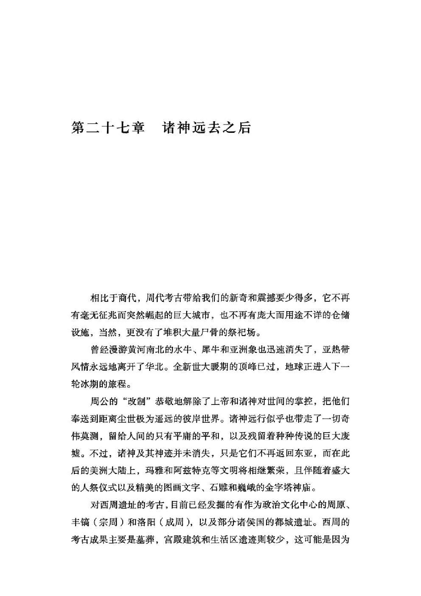
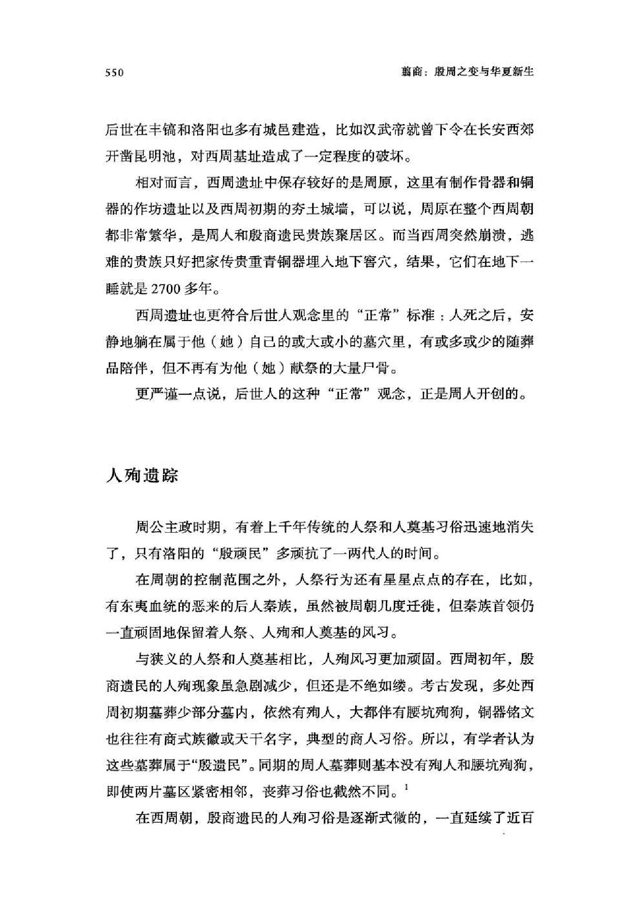
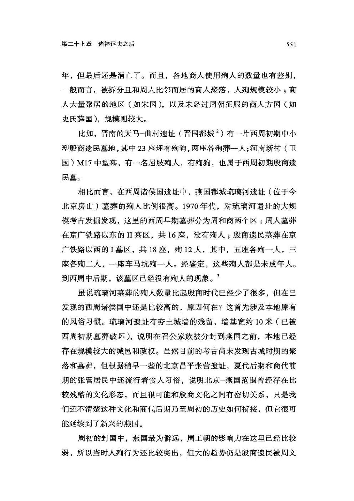
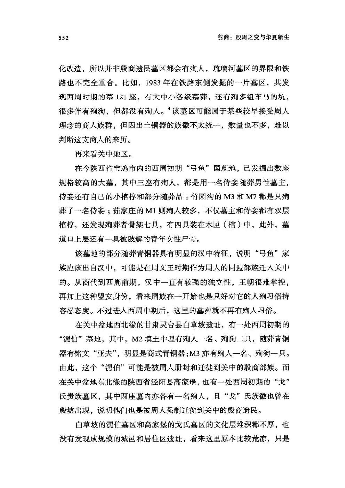
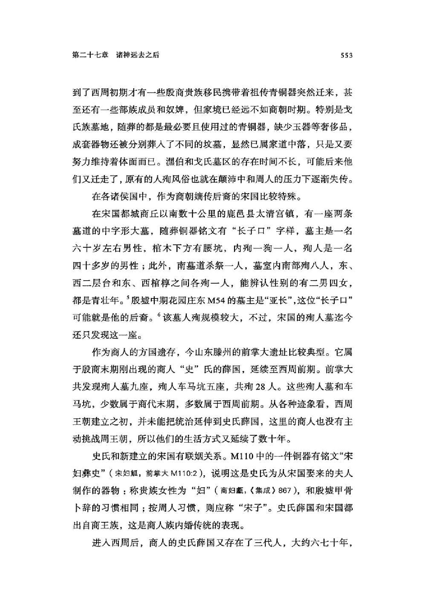
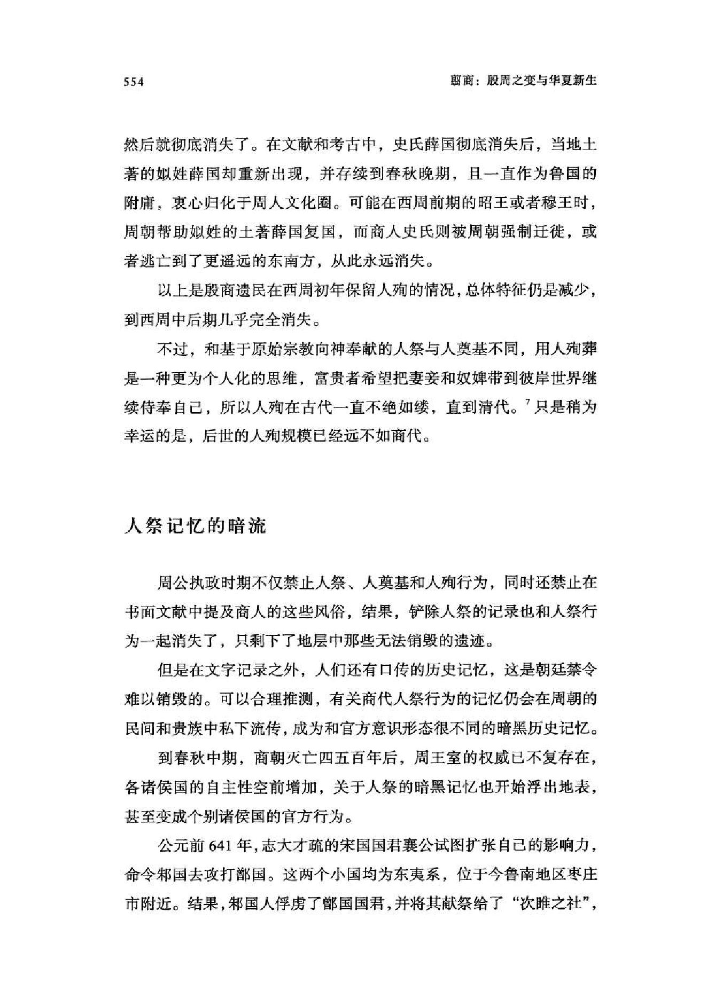
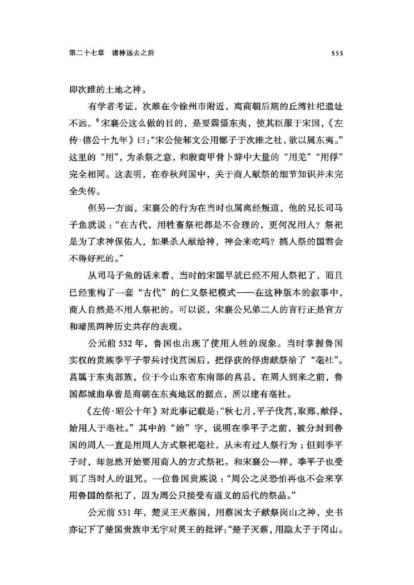
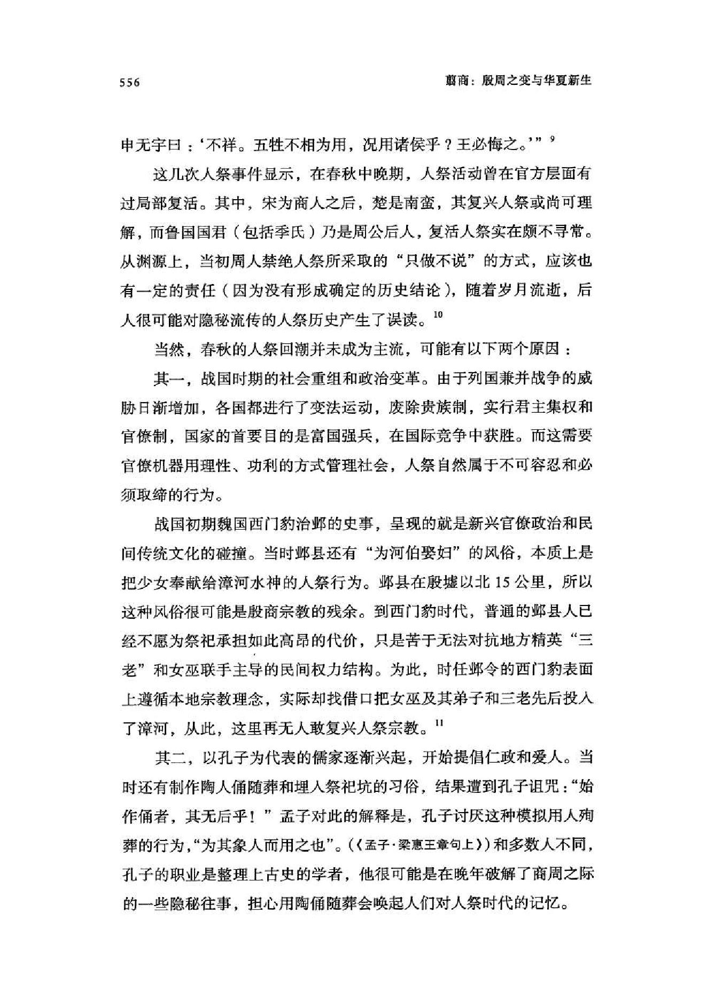
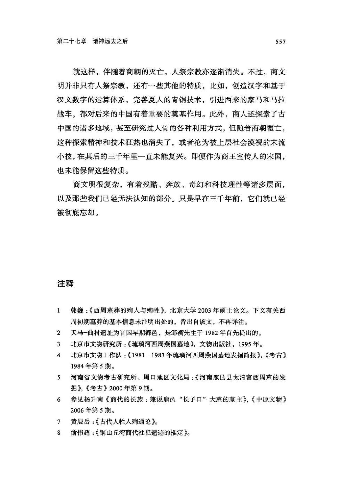
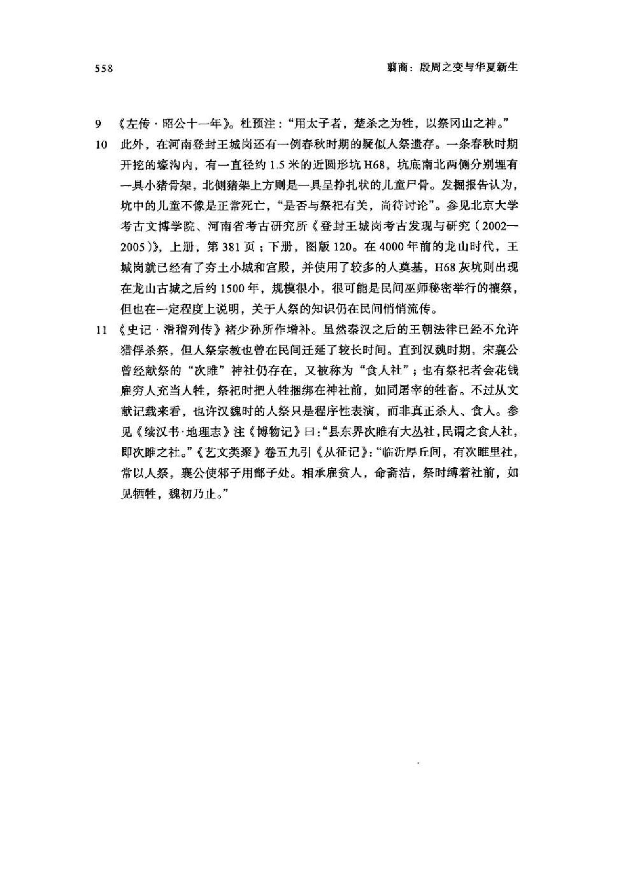

阅读词表
| 词条 | 拼音 | 类型 | 说明 |
|---|---|---|---|
| 人祭 | rén jì | concept | 杀人用于祭祀。 |
| 人殉 | rén xùn | concept | 随墓主而死或被杀陪葬。 |
| 宋国 | sòng guó | place | 周初分封商王族后裔之国。 |
| 鲁国 | lǔ guó | place | 周公后裔封国。 |
| 燕国 | yān guó | place | 西周诸侯国。 |
| 琉璃河 | liú lí hé | site_or_culture | 北京房山西周燕国遗址。 |
| 周公 | zhōu gōng | person | 周公旦，周初政治家。 |
| 邺 | yè | place | 古地名，今河南安阳北一带。 |
| 人牲 | rén shēng | concept | 被杀用于祭祀的人。 |
| 长子口 | zhǎng zǐ kǒu | person | 鹿邑大墓铜器铭文所见名号。 |
| 西门豹 | xī mén bào | person | 战国魏国邺令，破除河伯娶妇习俗。 |
| 鹿邑 | lù yì | place | 河南地名，太清宫西周大墓所在地。 |
| 左传 | zuǒ zhuàn | text | 春秋史传文献。 |
| 太清宫 | tài qīng gōng | site_or_culture | 河南鹿邑西周墓地所在。 |
| 亚长 | yà zhǎng | person | 殷墟花园庄东M54墓主。 |
| 玛雅 | mǎ yǎ | site_or_culture | 美洲古代文明，文中用于比较人祭。 |
| 阿兹特克 | ā zī tè kè | site_or_culture | 美洲古代文明，文中用于比较人祭。 |
| 楚国 | chǔ guó | place | 春秋战国南方大国。 |
| 改制 | gǎi zhì | concept | 周公对商周制度和宗教秩序的调整。 |
| 河伯 | hé bó | concept | 黄河水神名。 |
| 殷商甲骨卜辞 | yīn shāng jiǎ gǔ bǔ cí | 项目词典 | 商代刻写在甲骨上的占卜文字材料。 |
| 殷商遗民 | yīn shāng yí mín | 项目词典 | 商朝灭亡后延续生活的商人群体。 |
| 甲骨卜辞 | jiǎ gǔ bǔ cí | 项目词典 | 商代刻写在甲骨上的占卜文字。 | 刻写在龟甲兽骨上的占卜文字。 | 刻写在甲骨上的占卜记录。 | 刻写在龟甲兽骨上的占卜辞句。 |
| 腰坑殉狗 | yāo kēng xùn gǒu | 项目词典 | 在墓穴腰坑中埋狗的丧葬习俗。 | 墓穴腰部小坑中埋狗的商人葬俗。 |
| 二层台 | èr céng tái | 项目词典 | 墓室内用于放置随葬品或殉人的台阶状结构。 |
| 人奠基 | rén diàn jī | 项目词典 | 建筑奠基时以人作为牺牲的行为。 | 以人牲用于建筑奠基。 | 将人夯筑在地基内作为建筑奠基祭祀。 |
| 周文王 | zhōu wén wáng | 项目词典 | 周族领袖姬昌。 |
| 殷顽民 | yīn wán mín | 项目词典 | 周初对殷商遗民中难以驯服者的称呼。 |
| 祭祀坑 | jì sì kēng | 项目词典 | 用于举行祭祀或埋入祭品的坑穴。 | 考古遗址中用于掩埋祭品或举行祭祀的坑穴。 | 用于祭祀或埋藏祭品的坑穴。 | 用于祭祀埋牲或埋人的坑穴。 | 考古遗址中用于祭祀、掩埋祭品或尸骨的坑穴。 |
| 车马坑 | chē mǎ kēng | 项目词典 | 埋葬车马的陪葬坑。 |
| 上帝 | shàng dì | 项目词典 | 商周宗教中的最高神。 |
| 儒家 | rú jiā | 项目词典 | 以孔子思想及相关经典传统为核心的学派。 |
| 先后 | xiān hòu | 项目词典 | 《盘庚》引文中指已故先王。 |
| 分封 | fēn fēng | 项目词典 | 周初封邦建国制度。 |
| 卜辞 | bǔ cí | 项目词典 | 甲骨占卜后刻写或记录的辞句。 | 甲骨上记录占卜的文字。 | 占卜时刻写或记录的辞句。 |
| 卫国 | wèi guó | 项目词典 | 周初分封诸侯国。 |
| 周原 | zhōu yuán | 项目词典 | 关中地区周族的重要活动中心。 | 关中地区周族重要遗址和活动中心。 | 周族核心区域。 |
| 商王 | shāng wáng | 项目词典 | 商朝王。 |
| 土著 | tǔ zhù | 项目词典 | 本地原有居民或族群。 |
| 地层 | dì céng | 项目词典 | 遗址中不同时期堆积形成的层次。 |
| 坑底 | kēng dǐ | 项目词典 | 坑穴底部，常用于描述考古遗迹。 | 坑穴底部。 |
| 城邑 | chéng yì | 项目词典 | 古代有人群聚居、具有一定组织和防御功能的城镇聚落。 |
| 基址 | jī zhǐ | 项目词典 | 建筑物遗留下来的基础位置。 |
| 填土 | tián tǔ | 项目词典 | 填入坑穴或遗迹中的土层。 |
| 墓道 | mù dào | 项目词典 | 大墓中通往墓穴的斜坡或通道。 |
| 夯土 | hāng tǔ | 项目词典 | 把土层层夯实形成建筑基础或城墙的技术。 |
| 奠基 | diàn jī | 项目词典 | 建筑开始时的基础工程或相关仪式。 | 建筑开始时的基础仪式或基础施工。 |
| 孔子 | kǒng zǐ | 项目词典 | 春秋时期思想家、教育家，儒家学派的重要奠基者。 |
| 张营 | zhāng yíng | 项目词典 | 北京昌平商代遗址，文中涉及食人遗存。 |
| 成周 | chéng zhōu | 项目词典 | 西周东都。 |
| 捆绑 | kǔn bǎng | 项目词典 | 用绳索等束缚身体。 |
| 族徽 | zú huī | 项目词典 | 族群标识，常见于商周青铜器铭文。 |
| 春秋 | chūn qiū | 项目词典 | 孔子时代相关的编年史经典。 |
| 昭王 | zhāo wáng | 项目词典 | 此篇主要指秦昭襄王。 |
| 杀祭 | shā jì | 项目词典 | 以杀牲或杀人作为祭祀的仪式。 | 通过杀牲或杀人进行的祭祀。 | 通过杀人或杀牲举行的祭祀。 |
| 棺椁 | guān guǒ | 项目词典 | 棺材及外棺。 |
| 殉人 | xùn rén | 项目词典 | 陪葬或随葬的人。 |
| 殉葬 | xùn zàng | 项目词典 | 以人或物随葬。 |
| 殷商 | yīn shāng | 项目词典 | 商朝后期文化和政权。 | 商代后期以殷墟为中心的商王朝阶段。 |
| 殷墟 | yīn xū | 项目词典 | 晚商都邑遗址，甲骨卜辞的重要出土地。 | 商代晚期都城遗址。 |
| 水牛 | shuǐ niú | 项目词典 | 商人畜牧和祭祀中涉及的家畜。 |
| 灰坑 | huī kēng | 项目词典 | 考古遗迹中常见的垃圾坑或废弃坑。 | 遗址中含灰土、废弃物或祭祀遗存的坑穴。 |
| 献祭 | xiàn jì | 项目词典 | 把祭品奉献给神灵或祖先。 | 向神灵、祖先等奉献祭品。 |
| 祭品 | jì pǐn | 项目词典 | 祭祀时献给神灵或祖先的物品。 |
| 窖穴 | jiào xué | 项目词典 | 地下储藏坑穴。 |
| 肢解 | zhī jiě | 项目词典 | 将肢体切割分解。 |
| 诅咒 | zǔ zhòu | 项目词典 | 以宗教方式祈求灾祸降临敌方。 |
| 迁徙 | qiān xǐ | 项目词典 | 群体从一地迁移到另一地。 |
| 遗存 | yí cún | 项目词典 | 古代活动留下的遗物、遗迹或现象。 |
| 都邑 | dū yì | 项目词典 | 作为政治中心的大型聚落或城市。 |
| 铭文 | míng wén | 项目词典 | 铸刻在青铜器等器物上的文字。 | 器物上铸刻或刻写的文字。 |
| 韩巍 | hán wēi | 项目词典 | 研究西周殷商遗民丧葬习俗的学者。 |
青铜器词表
| 器名 | 拼音 | 类型 | 说明 |
|---|---|---|---|
| 戈 | gē | bronze_item | 古代横刃长柄兵器。 |
| 彝 | yí | bronze_item | 古代盛酒器，也泛指宗庙祭器。 |
章节导读札记
| 主题 | 札记 | 操作 |
|---|---|---|
| 暂无章节导读札记 | ||
用户札记
| 类型 | 页 | 内容 |
|---|---|---|
| 暂无用户札记 | ||
原书阅读器页 563原书物理 PDF 页 561印刷页 549
第二十七章诸神远去之后
相比于商代，周代考古带给我们的新奇和震撼要少得多，它不再有毫无征兆而突然崛起的巨大城市，也不再有庞大而用途不详的仓储设施，当然，更没有了堆积大量尸骨的祭祀场。
曾经漫游黄河南北的水牛、犀牛和亚洲象也迅速消失了，亚热带风情永远地离开了华北。全新世大暖期的顶峰已过，地球正进入下一轮冰期的旅程。
周公的“改制”恭敬地解除了上帝和诸神对世间的掌控，把他们奉送到距离尘世极为遥远的彼岸世界。诸神远行似乎也带走了一切奇伟莫测，留给人间的只有平庸的平和，以及残留着种种传说的巨大废墟。不过，诸神及其神迹并未消失，只是它们不再返回东亚，而在此后的美洲大陆上，玛雅和阿兹特克等文明将相继繁荣，且伴随着盛大的人祭仪式以及精美的图画文字、石雕和巍峨的金字塔神庙。
对西周遗址的考古，目前已经发掘的有作为政治文化中心的周原、丰镐（宗周）和洛阳（成周），以及部分诸侯国的都城遗址。西周的考古成果主要是墓葬，宫殿建筑和生活区遗迹则较少，这可能是因为后世在丰镐和洛阳也多有城邑建造，比如汉武帝就曾下令在长安西郊开凿昆明池，对西周基址造成了一定程度的破坏。
相对而言，西周遗址中保存较好的是周原，这里有制作骨器和铜器的作坊遗址以及西周初期的夯土城墙，可以说，周原在整个西周朝都非常繁华，是周人和殷商遗民贵族聚居区。而当西周突然崩溃，逃难的贵族只好把家传贵重青铜器埋入地下窖穴，结果，它们在地下一睡就是2700多年。
西周遗址也更符合后世人观念里的“正常”标准：人死之后，安静地躺在属于他（她）自己的或大或小的墓穴里，有或多或少的随葬品陪伴，但不再有为他（她）献祭的大量尸骨。

原书阅读器页 564原书物理 PDF 页 562印刷页 550
更严谨一点说，后世人的这种“正常”观念，正是周人开创的。
人殉遗踪
周公主政时期，有着上千年传统的人祭和人奠基习俗迅速地消失了，只有洛阳的“殷顽民”多顽抗了一两代人的时间。
在周朝的控制范围之外，人祭行为还有星星点点的存在，比如，有东夷血统的恶来的后人秦族，虽然被周朝几度迁徙，但秦族首领仍一直顽固地保留着人祭、人殉和人奠基的风习。
与狭义的人祭和人奠基相比，人殉风习更加顽固。西周初年，殷商遗民的人殉现象虽急剧减少，但还是不绝如缕。考古发现，多处西周初期墓葬少部分墓内，依然有殉人，大都伴有腰坑殉狗，铜器铭文也往往有商式族徽或天干名字，典型的商人习俗。所以，有学者认为这些墓葬属于“殷遗民”。同期的周人墓葬则基本没有殉人和腰坑殉狗，即使两片墓区紧密相邻，丧葬习俗也截然不同。】
在西周朝，殷商遗民的人殉习俗是逐渐式微的，一直延续了近百年，但最后还是消亡了。而且，各地商人使用殉人的数量也有差别，一般而言，被拆分且和周人比邻而居的商人聚落，人殉规模较小；商人大量聚居的地区（如宋国），以及未经过周朝征服的商人方国（如史氏薛国），规模则较大。
比如，晋南的天马-曲村遗址（晋国都城2）有一片西周初期中小型殷商遗民墓地，其中23座埋有殉狗，两座各殉葬一人；河南新村（卫国）M17中型墓，有一名屈肢殉人，有殉狗，也属于西周初期殷商遗民墓。
相比而言，在西周诸侯国遗址中，燕国都城琉璃河遗址（位于今北京房山）墓葬的殉人比例很高。1970年代，对琉璃河遗址的大规模考古发掘发现，这里的西周早期墓葬分为周和商两个区：周人墓葬在京广铁路以东的II墓区，共16座，没有殉人；殷商遗民墓葬在京广铁路以西的I墓区，共18座，殉12人，其中，五座各殉一人，三座各殉二人，一座车马坑殉一人。经鉴定，这些殉人都是未成年人。到西周中后期，该墓区已经没有殉人的现象。3

原书阅读器页 565原书物理 PDF 页 563印刷页 551
虽说琉璃河墓葬的殉人数量比起殷商时代已经少了很多，但在已发现的西周诸侯国中还是比较高的，原因何在？这首先涉及本地原有的风俗习惯。琉璃河遗址有夯土城墙的残留，墙基宽约10米（已被西周初期墓葬破坏），说明在召公家族被分封到燕国之前，本地已经存在规模较大的城邑和政权。虽然目前的考古尚未发现古城时期的聚落和墓葬，但根据稍早一些的北京昌平张营遗址，夏代后期和商代前期的张营居民中还流行着食人习俗，说明北京-燕国范围曾经存在比较残酷的文化形态，而且很可能和殷商文化之间有密切关系，只是我们还不清楚这种文化和商代后期乃至周初的历史如何衔接，但它很可能延续到了新兴的燕国。
周初的封国中，燕国最为僻远，周王朝的影响力在这里已经比较弱，所以当时人殉行为还比较突出，但大的趋势仍是殷商遗民被周文化改造，所以并非殷商遗民墓区都会有殉人，琉璃河墓区的界限和铁路也不完全重合。比如，1983年在铁路东侧发掘的一片墓区，共发现西周时期的墓121座，有大中小各级墓葬，还有殉多组车马的坑，很多伴有殉狗，但都没有殉人。4该墓区可能属于某些较早接受周人理念的商人族群，但因出土铜器的族徽不太统一，数量也不多，难以判断这支商人的来历。
再来看关中地区。
在今陕西省宝鸡市内的西周初期“弓鱼”国墓地，已发掘出数座规格较高的大墓，其中三座有殉人，都是用一名侍妾随葬男性墓主，侍妾还有自己的小棺椁和部分随葬品：竹园沟的M3和M7都是只殉葬了一名侍妾；茹家庄的M1则殉人较多，不仅墓主和侍妾都有双层棺椁，还发现殉葬者骨架七具，有四具装在木匣（棺）中，此外，墓道口上层还有一具被肢解的青年女性尸骨。
该墓地的部分随葬青铜器具有明显的汉中特征，说明“弓鱼”家族应该出自汉中，可能是在周文王时期作为周人的同盟部族迁入关中的。从商代到西周前期，汉中一直有较强的独立性，王朝很难掌控，再加上这种盟友身份，看来周族在一开始也是只好对它的人殉习俗持容忍态度。不过进入西周中期后，这里的墓葬就不再有殉人习俗。

原书阅读器页 566原书物理 PDF 页 564印刷页 552
在关中盆地西北缘的甘肃灵台县白草坡遗址，有一处西周初期的“漂伯”墓地，其中，M2填土中埋有殉人一名、殉狗二只，随葬青铜器有铭文“亚夫”，明显是商式青铜器；M3亦有殉人一名、殉狗一只。由此，这个“漂伯”可能是被周人册封和迁徙到关中的殷商部族。而在关中盆地东北缘的陕西省泾阳县高家堡，也有一处西周初期的“戈”氏贵族墓区，其中两座墓内亦各有一名殉人，且“戈”氏族徽也曾在殷墟出现，说明他们也是被周人强制迁徙到关中的殷商遗民。
白草坡的漂伯墓区和高家堡的戈氏墓区的文化层堆积都不厚，也没有发现成规模的城邑和居住区遗址，看来这里原本比较荒凉，只是到了西周初期才有一些殷商贵族移民携带着祖传青铜器突然迁来，甚至还有一些部族成员和奴婢，但家境已经远不如商朝时期。特别是戈氏族墓地，随葬的都是最必要且使用过的青铜器，缺少玉器等奢侈品，成套器物还被分别葬入了不同的坟墓，显然已属家道中落，只是又要努力维持着体面而已。漂伯和戈氏墓区的存在时间不长，可能后来他们又迁走了，原有的人殉风俗也就在颠沛中和周人的压力下逐渐失传。
在各诸侯国中，作为商朝嫡传后裔的宋国比较特殊。
在宋国都城商丘以南数十公里的鹿邑县太清宫镇，有一座两条墓道的中字形大墓，随葬铜器铭文有“长子口”字样，墓主是一名六十岁左右男性，棺木下方有腰坑，内殉一狗一人，殉人是一名四十多岁的男性；此外，南墓道杀祭一人，墓室内南部殉八人，东、西二层台和东、西棺椁之间各殉一人，能辨认性别的有二男四女，都是青壮年。5殷墟中期花园庄东M54的墓主是“亚长”，这位“长子口”可能就是他的后裔。6该墓人殉规模较大，不过，宋国的殉人墓迄今还只发现这一座。

原书阅读器页 567原书物理 PDF 页 565印刷页 553
作为商人的方国遗存，今山东滕州的前掌大遗址比较典型。它属于殷商末期刚出现的商人“史”氏的薛国，延续至西周前期。前掌大共发现殉人墓九座，殉人车马坑五座，共殉28人。这些殉人墓和车马坑，少数属于商代末期，多数属于西周前期。从各种迹象看，西周王朝建立之初，并未能把统治延伸到史氏薛国，这里的商人也没有主动挑战周王朝，所以他们的生活方式又延续了数十年。
史氏和新建立的宋国有联姻关系。M110中的一件铜器有铭文“宋妇彝史”（宋妇觎，前掌大M110：2），说明这是史氏为从宋国娶来的夫人制作的器物：称贵族女性为“妇”（商妇就，《集成》867），和殷墟甲骨卜辞的习惯相同；按周人习惯，则应称“宋子”。史氏薛国和宋国都出自商王族，这是商人族内婚传统的表现。
进入西周后，商人的史氏薛国又存在了三代人，大约六七十年，然后就彻底消失了。在文献和考古中，史氏薛国彻底消失后，当地土著的姒姓薛国却重新出现，并存续到春秋晚期，且一直作为鲁国的附庸，衷心归化于周人文化圈。可能在西周前期的昭王或者穆王时，周朝帮助姒姓的土著薛国复国，而商人史氏则被周朝强制迁徙，或者逃亡到了更遥远的东南方，从此永远消失。
以上是殷商遗民在西周初年保留人殉的情况，总体特征仍是减少，到西周中后期几乎完全消失。
不过，和基于原始宗教向神奉献的人祭与人奠基不同，用人殉葬是一种更为个人化的思维，富贵者希望把妻妾和奴婢带到彼岸世界继续侍奉自己，所以人殉在古代一直不绝如缕，直到清代。7只是稍为幸运的是，后世的人殉规模已经远不如商代。
人祭记忆的暗流
周公执政时期不仅禁止人祭、人奠基和人殉行为，同时还禁止在书面文献中提及商人的这些风俗，结果，铲除人祭的记录也和人祭行为一起消失了，只剩下了地层中那些无法销毁的遗迹。

原书阅读器页 568原书物理 PDF 页 566印刷页 554
但是在文字记录之外，人们还有口传的历史记忆，这是朝廷禁令难以销毁的。可以合理推测，有关商代人祭行为的记忆仍会在周朝的民间和贵族中私下流传，成为和官方意识形态很不同的暗黑历史记忆。
到春秋中期，商朝灭亡四五百年后，周王室的权威已不复存在，各诸侯国的自主性空前增加，关于人祭的暗黑记忆也开始浮出地表，甚至变成个别诸侯国的官方行为。
公元前641年，志大才疏的宋国国君襄公试图扩张自己的影响力，命令帮国去攻打部国。这两个小国均为东夷系，位于今鲁南地区枣庄市附近。结果，帮国人俘虏了部国国君，并将其献祭给了“次睢之社”，即次睢的土地之神。
有学者考证，次睢在今徐州市附近，离商朝后期的丘湾社祀遗址不远。宋襄公这么做的目的，是要震慑东夷，使其臣服于宋国，《左传•僖公十九年》曰：“宋公使郝文公用部子于次睢之社，欲以属东夷。”这里的“用”，为杀祭之意，和殷商甲骨卜辞中大量的“用羌”“用俘”完全相同。这表明，在春秋列国中，关于商人献祭的细节知识并未完全失传。
但另一方面，宋襄公的行为在当时也属离经叛道，他的兄长司马子鱼就说：“在古代，用牲畜祭祀都是不合理的，更何况用人？祭祀是为了求神保佑人，如果杀人献给神，神会来吃吗？搞人祭的国君会不得好死的。”
从司马子鱼的话来看，当时的宋国早就已经不用人祭祀了，而且已经重构了一套“古代”的仁义祭祀模式——在这种版本的叙事中，商人自然是不用人祭祀的。可以说，宋襄公兄弟二人的言行正是官方和暗黑两种历史共存的表现。
公元前532年，鲁国也出现了使用人牲的现象。当时掌握鲁国实权的贵族季平子带兵讨伐莒国后，把俘获的俘虏献祭给了“亳社”。莒属于东夷部族，位于今山东省东南部的莒县，在周人到来之前，鲁国都城曲阜曾是商朝在东夷地区的据点，所以建有亳社。

原书阅读器页 569原书物理 PDF 页 567印刷页 555
《左传・昭公十年》对此事记载是：“秋七月，平子伐莒，取邺，献俘，始用人于亳社。”其中的“始”字，说明在季平子之前，被分封到鲁国的周人一直是用周人方式祭祀亳社，从未有过人祭行为；但到季平子时，却忽然开始要用商人的方式祭祀。和宋襄公一样，季平子也受到了当时人的诅咒。一位鲁国贵族说：“周公之灵恐怕再也不会来享用鲁国的祭祀了，因为周公只接受有道义的后代的祭品。”
公元前531年，楚灵王灭蔡国，用蔡国太子献祭岗山之神，史书亦记下了楚国贵族申无宇对灵王的批评：“楚子灭蔡，用隐太子于冈山。
申无宇曰：‘不祥。五牲不相为用，况用诸侯乎？王必悔之。9
这几次人祭事件显示，在春秋中晚期，人祭活动曾在官方层面有过局部复活。其中，宋为商人之后，楚是南蛮，其复兴人祭或尚可理解，而鲁国国君（包括季氏）乃是周公后人，复活人祭实在颇不寻常。从渊源上，当初周人禁绝人祭所采取的“只做不说”的方式，应该也有一定的责任（因为没有形成确定的历史结论），随着岁月流逝，后人很可能对隐秘流传的人祭历史产生了误读。10
当然，春秋的人祭回潮并未成为主流，可能有以下两个原因：
其一，战国时期的社会重组和政治变革。由于列国兼并战争的威胁日渐增加，各国都进行了变法运动，废除贵族制，实行君主集权和官僚制，国家的首要目的是富国强兵，在国际竞争中获胜。而这需要官僚机器用理性、功利的方式管理社会，人祭自然属于不可容忍和必须取缔的行为。
战国初期魏国西门豹治邺的史事，呈现的就是新兴官僚政治和民间传统文化的碰撞。当时邺县还有“为河伯娶妇”的风俗，本质上是把少女奉献给漳河水神的人祭行为。邺县在殷墟以北15公里，所以这种风俗很可能是殷商宗教的残余。到西门豹时代，普通的邺县人已经不愿为祭祀承担如此高昂的代价，只是苦于无法对抗地方精英“三老”和女巫联手主导的民间权力结构。为此，时任邺令的西门豹表面上遵循本地宗教理念，实际却找借口把女巫及其弟子和三老先后投入了漳河，从此，这里再无人敢复兴人祭宗教。11

原书阅读器页 570原书物理 PDF 页 568印刷页 556
其二，以孔子为代表的儒家逐渐兴起，开始提倡仁政和爱人。当时还有制作陶人俑随葬和埋入祭祀坑的习俗，结果遭到孔子诅咒：“始作俑者，其无后乎！”孟子对此的解释是，孔子讨厌这种模拟用人殉葬的行为，“为其象人而用之也”。（《孟子・梁惠王章句上》）和多数人不同，孔子的职业是整理上古史的学者，他很可能是在晚年破解了商周之际的一些隐秘往事，担心用陶俑随葬会唤起人们对人祭时代的记忆。
就这样，伴随着商朝的灭亡，人祭宗教亦逐渐消失。不过，商文明并非只有人祭宗教，还有一些其他的特质，比如，创造汉字和基于汉文数字的运算体系，完善夏人的青铜技术，引进西来的家马和马拉战车，都对后来的中国有着重要的奠基作用。此外，商人还探索了古中国的诸多地域，甚至研究过人骨的各种利用方式，但随着商朝覆亡，这种探索精神和技术狂热也消失了，或者沦为被上层社会漠视的末流小技，在其后的三千年里一直未能复兴。即便作为商王室传人的宋国，也未能保留这些特质。
商文明很复杂，有着残酷、奔放、奇幻和科技理性等诸多层面，以及那些我们已经无法认知的部分。只是早在三千年前，它们就已经被彻底忘却。
注释
1韩巍：《西周墓葬的殉人与殉牲》，北京大学2003年硕士论文。下文有关西
周初期墓葬的基本信息未注明出处的，皆出自该文，不再详注。
2天马一曲村遗址为晋国早期都邑，是邹衡先生于1982年首先提出的。
3北京市文物研究所：《琉璃河西周燕国墓地》，文物出版社，1995年。
4北京市文物工作队：《1981—1983年琉璃河西周燕国墓地发掘简报》，《考古》1984年第5期。
5河南省文物考古研究所、周口地区文化局：《河南鹿邑县太清宫西周墓的发

原书阅读器页 571原书物理 PDF 页 569印刷页 557
掘》，《考古》2000年第9期。
6参见杨升南《商代的长族：兼说鹿邑“长子口”大墓的墓主》，《中原文物》2006年第5期。
7黄展岳：《古代人牲人殉通论》。
8俞伟超：《铜山丘湾商代社祀遗迹的推定》。
9《左传•昭公十一年》。杜预注：“用太子者，楚杀之为牲，以祭冈山之神。”10此外，在河南登封王城岗还有一例春秋时期的疑似人祭遗存。一条春秋时期
开挖的壕沟内，有一直径约1.5米的近圆形坑H68，坑底南北两侧分别埋有一具小猪骨架，北侧猪架上方则是一具呈挣扎状的儿童尸骨。发掘报告认为，坑中的儿童不像是正常死亡，”是否与祭祀有关，尚待讨论”。参见北京大学考古文博学院、河南省考古研究所《登封王城岗考古发现与研究(2002— 2005)》，上册，第381页；下册，图版120。在4000年前的龙山时代，王城岗就已经有了夯土小城和宫殿，并使用了较多的人奠基，H68灰坑则出现在龙山古城之后约1500年，规模很小，很可能是民间巫师秘密举行的禳祭，但也在一定程度上说明，关于人祭的知识仍在民间悄悄流传。
11《史记•滑稽列传》褚少孙所作增补。虽然秦汉之后的王朝法律已经不允许猎俘杀祭，但人祭宗教也曾在民间迁延了较长时间。直到汉魏时期，宋襄公曾经献祭的“次睢”神社仍存在，又被称为“食人社”；也有祭祀者会花钱雇穷人充当人牲，祭祀时把人牲捆绑在神社前，如同屠宰的牲畜。不过从文献记载来看，也许汉魏时的人祭只是程序性表演，而非真正杀人、食人。参见《续汉书•地理志》注《博物记》曰：“县东界次睢有大丛社，民谓之食人社，即次睢之社。”《艺文类聚》卷五九引《从征记》：“临沂厚丘间，有次睢里社，常以人祭，襄公使帮子用部子处。相承雇贫人，命斋洁，祭时缚着社前，如见牺牲，魏初乃止。”

原书阅读器页 572原书物理 PDF 页 570印刷页 558

编辑札记
标记
先在正文中选择文字，再输入拼音；可用“拼音；简注”。